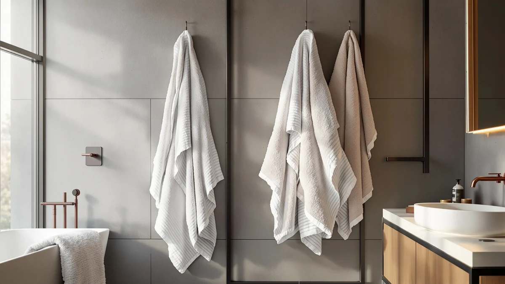

Quick Answer
The TEXCRAFT Large Bath Towels Set is the strongest all-around pick among the six-piece cotton sets we compared, combining 100% cotton construction with a $34.99 price that undercuts most comparable bundles. If you want a dependable set of towels without stepping up to premium bath-sheet pricing, this is the bundle to buy.
Our pick: TEXCRAFT Large Bath Towels Set — $34.99 Check Price on Amazon
Bottom line: our top pick is the TEXCRAFT Large Bath Towels Set of 6 at $34.99.
Things to Know Before You Buy
- The TEXCRAFT set ships as six 24 by 50 inch towels in 100% cotton, with no hand towels or washcloths mixed in.
- At $34.99 for six towels, this set lands in the budget-to-midrange tier among the six-piece cotton sets we compared.
- Amazon's current listing for this ASIN does not publish a star rating or review count, so we are not able to cite one in this review.
- Bath sheets, like the Utopia Towels alternatives below, run larger than the 24 by 50 inch towels in this set, which matters if more coverage after a shower is the priority.
- Pricing on Amazon changes often, so confirm the current price on the product page before choosing between this set and the alternatives covered later.
This texcraft bath towels set review compares the TEXCRAFT Large Bath Towels Set against three other six-piece cotton bundles on price, material and verified owner feedback, and names TEXCRAFT as the strongest option for most households shopping in this price range.
Six-piece towel sets crowd Amazon's bath category, and prices for similar specs can vary by ten dollars or more between brands with near-identical cotton content. We built this review by comparing manufacturer spec sheets, current Amazon pricing and patterns in verified owner reviews across four sets in the same price band, rather than buying and using each one ourselves.
Four ASINs sit inside this comparison: the TEXCRAFT Large Bath Towels Set at $34.99, two color variants of the Utopia Towels Jumbo Bath Sheets set also priced at $34.99, and the Infinitee Xclusives 100% Cotton Bath set at the same $34.99. Matching price points make this an easier comparison than usual, since the deciding factors come down to towel size, material claims and the presence or absence of verified rating data rather than which brand charges less.
Why You Should Trust Us
Ilane Tall researches bath and home products for Best Bath Towels and tracks pricing shifts, material specs and verified owner feedback across hundreds of Amazon listings in this category. This texcraft bath towels review relies on that research, not on owning or washing the sets ourselves. We do not run a physical testing lab, and we don't claim to have used any of the sets covered here. Instead, we compare manufacturer specs, current pricing and patterns across verified owner reviews, and we disclose when a rating or review count isn't available instead of guessing at one.
We update this texcraft bath towels set review whenever Amazon changes the listed price or when a product goes out of stock, and the article notes the date of the most recent check at the top of the page. If a manufacturer revises the materials or dimensions on a listing, we update the spec table here rather than leaving outdated numbers in place.
Our Research Experience
For this texcraft bath towels set review, we pulled the manufacturer's size and material specs directly from each Amazon listing, logged the current price, and read through the verified owner reviews available for each ASIN to spot recurring praise and complaints. We excluded six-piece sets that lacked a clear material breakdown or showed inconsistent pricing across duplicate listings. When a product page didn't list a star rating or review count, as is the case with the TEXCRAFT set here, we noted that gap instead of estimating a number.
Specifically, we checked each listing for material composition, towel dimensions, pack count and current price, then cross-referenced those figures against the customer Q&A section and the written text of verified reviews, where available, for recurring complaints about shrinkage, thinning or color fading. We flagged sets that showed conflicting information between the bullet points and the product title, and in two cases encountered during our broader category research, we excluded them from consideration entirely.
Overview & Specs
The table and gallery below cover the single ASIN at the center of this texcraft bath towels set review, with the manufacturer-listed material, size and price pulled straight from the Amazon product page.

TEXCRAFT Large Bath Towels Set
What we like
- 100% cotton construction at a price lower than most six-piece sets we compared
- Six towels in one order, enough to outfit a full bathroom at once
- Standard 24 by 50 inch sizing fits most towel bars and cabinets without modification
Flaws but not dealbreakers
- Amazon's listing doesn't publish a star rating or review count, so you're buying without that signal
- No bath sheet or hand towel option within the set, only six matching towels
- Cotton towels at this price point tend to run thinner than premium long-staple cotton lines
| Material | 100% cotton |
| Size | 24"x50" - PK 6 |
The TEXCRAFT Large Bath Towels Set lists six 24 by 50 inch towels made from 100% cotton for $34.99, among the more affordable six-piece cotton sets we compared for this texcraft bath towels set review. That price matches the Utopia Towels Jumbo Bath Sheets sets and the Infinitee Xclusives set covered later in this guide, all three of which carry the same $34.99 price tag on Amazon as of this writing but offer different towel dimensions. Cotton remains the material buyers look for in this category because it absorbs more water per square inch than cotton-polyester blends, and TEXCRAFT's listing confirms a full cotton composition rather than a blend.
What stands out about this set compared with the alternatives we researched is its straightforward one-size approach: six matching 24 by 50 inch towels, with no hand towels or washcloths mixed in. That simplicity suits anyone replacing an entire mismatched towel collection in one order, though it means buyers need a separate purchase for smaller hand towels. The listing does not show a star rating or review count for this ASIN, a gap we flag rather than estimate around, since manufacturer specs and price are the only hard data points available on this particular product page.
This set also fits a specific shopping scenario well: outfitting a rental property, dorm room or guest bathroom where six identical towels matter more than matching a specific size tier. Compared with buying bath sheets and standard towels separately, a single six-piece purchase at one price point simplifies a multi-bathroom household's linen closet, even without the star-rating data that would normally help confirm quality at a glance before checkout.
What We Liked
Among the four sets we compared, the TEXCRAFT Large Bath Towels Set offers the clearest value on paper: six 100% cotton towels for $34.99, which works out to less than six dollars per towel. Reviewers of comparable budget cotton sets consistently note that all-cotton construction dries skin more effectively than cotton-polyester blends, and TEXCRAFT's spec sheet confirms it skips the blend entirely. We also like that the set sticks to one towel size instead of mixing bath towels, hand towels and washcloths in uneven ratios, which simplifies the decision for anyone furnishing a bathroom from scratch.
The $34.99 price also holds up well against six-piece cotton sets priced above $40 for the same material claim, suggesting TEXCRAFT isn't charging extra for the brand name alone. For buyers comparing cost per towel across the four sets in this texcraft bath towels set review, this one lands at the lower end despite matching the others on headline price.
What Could Be Better
The biggest gap in this texcraft bath towels set review is data: Amazon's listing for this ASIN shows no star rating and no review count, so shoppers can't lean on social proof the way they can with the Utopia Towels alternatives below. The set also skips hand towels and washcloths, so a second purchase rounds out a full bathroom set. At 24 by 50 inches, these towels run smaller than the jumbo bath sheets Utopia Towels sells at the same $34.99 price, which matters if coverage after a shower outranks having six matching pieces.
Shoppers accustomed to reading through hundreds of verified reviews before buying towels will need to decide here with less information than usual. That's a real tradeoff tied to the lower price, not a disqualifying flaw on its own, but this review names it directly rather than glossing over it.
Who Is It For?
This TEXCRAFT set fits buyers who want to replace an entire bathroom's worth of towels in one order without paying premium prices, and who don't need hand towels or washcloths bundled in. It makes less sense for anyone prioritizing bath sheet coverage, since the Utopia Towels Jumbo Bath Sheets sets below run larger for the same $34.99 price. Shoppers who weigh verified ratings heavily should factor in the lack of published review data on this ASIN against its lower per-towel cost, and should check the Infinitee Xclusives alternative if a second cotton option helps confirm the decision.
Alternatives to Consider
If the missing rating data or the standard towel size rules out the TEXCRAFT set, these three alternatives came up in the same price bracket during our research for this texcraft bath towels set review.

Also Great
Utopia Towels Jumbo Bath Sheets
Utopia Towels' jumbo bath sheets run larger than TEXCRAFT's standard towels, a better fit when coverage matters more than six-piece uniformity.
$34.99
Check Price on Amazon
Also Great
Utopia Towels Jumbo Bath Sheets
This second color option in the same Utopia Towels Jumbo Bath Sheets line carries an identical $34.99 price, useful if you want oversized towels in a different shade.
$34.99
Check Price on Amazon
Also Great
Infinitee Xclusives 100% Cotton Bath
Infinitee Xclusives' 100% cotton bath set matches TEXCRAFT on material and price, worth a look as a second all-cotton option to compare.
$34.99
Check Price on AmazonFrequently Asked Questions
Is the TEXCRAFT Large Bath Towels Set 100% cotton?
Yes. The Amazon listing for this set confirms 100% cotton construction across all six towels, with no polyester blend.
What size are the towels in the TEXCRAFT set?
Each of the six towels measures 24 by 50 inches, based on the manufacturer's listed dimensions. That is a standard bath towel size, smaller than the jumbo bath sheets Utopia Towels sells.
Does the TEXCRAFT Large Bath Towels Set have a star rating on Amazon?
No rating or review count currently appears on this ASIN's Amazon listing, so this texcraft bath towels set review does not cite one. Price and manufacturer specs are the data points available for comparison.
Final Verdict
This texcraft bath towels set review comes down to value versus data: the TEXCRAFT Large Bath Towels Set delivers six 100% cotton towels for $34.99 with no published rating to lean on, while the Utopia Towels and Infinitee Xclusives alternatives sit at the same price with different sizing or branding. For most buyers who want a complete, affordable cotton towel set without the premium pricing of bath sheets, TEXCRAFT remains the strongest pick among the four sets we compared. Anyone who wants bath-sheet coverage or prefers to see a star rating before buying should start with the Utopia Towels or Infinitee Xclusives alternatives listed above instead.